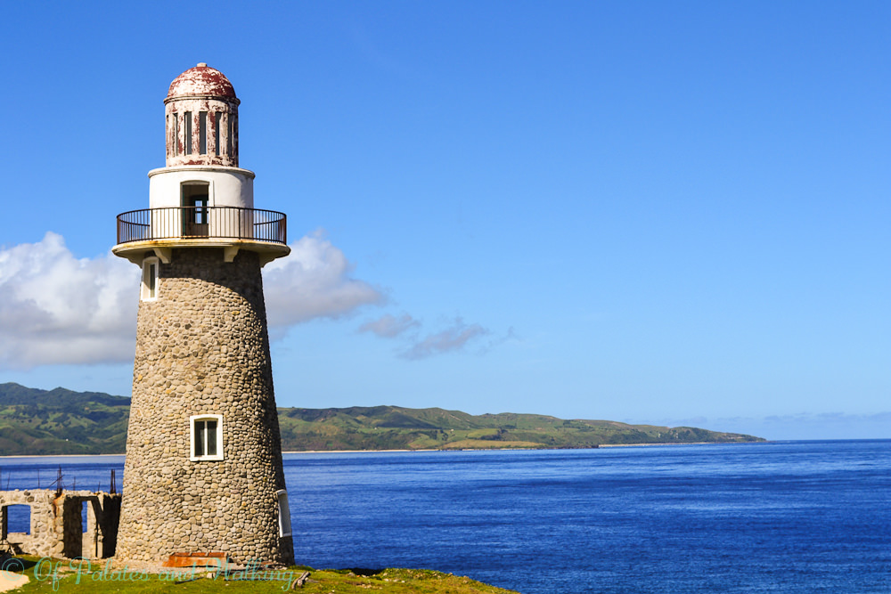

html>
    <head>
        <title>Quick Facts</title>
    </head>
    <body bgcolor="orange" ALINK="black" vlink="black" link="black">
        <center>
        <h1></h1>
        
        <br><br>
        <p><strong></strong></p>
        <br>
        <A HREF="index.html"> Back to Home</A>
        </center>
    </body>
</html>
    <h2>Quick facts</h2>
    <ul>
      <li><strong>Location:</strong> Northernmost part of the Philippines (Cagayan Valley region)</li>
      <li><strong>Main islands:</strong> Batan, Sabtang, and Itbayat (plus several small islets)</li>
      <li><strong>Capital:</strong> Basco, Batan Island</li>
      <li><strong>Population:</strong> Small, close-knit Ivatan communities</li>
      <li><strong>Language:</strong> Ivatan and Filipino (Tagalog)</li>
      <li><strong>Known for:</strong> Rugged landscapes, rolling hills, traditional stone houses, friendly locals, and unique culture</li>
    </ul>